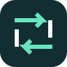

01 / VerplaatsenDirfluxDirectory + beweging. Twee pijlen verwijzen naar bestanden verplaatsen tussen twee vensters. Donkergroen met mint.24 / 40 / 56 px · monochroomDirfluxBestandenSVG-logoEén kleur
02 / ToegangFoldportEen toegangspoort tot je mappen. Het silhouet combineert een map met een open doorgang. Nachtblauw met lichtblauw.24 / 40 / 56 px · monochroomFoldportBestandenSVG-logoEén kleur